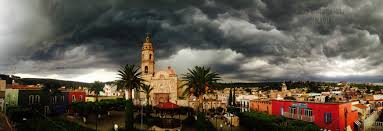

El verdadero auge de Cuquío sucedió cuando se fundó aquí un pueblo de españoles, registrando su primera acción de importancia el 6 de abril de 1690, cuando Pedro Gutiérrez de Hermosillo, Dionisio Sánchez de Porras y don Diego Flores de la Torre, hicieron una petición al obispo para que el santo sacramento fuera llevado a la iglesia de San Felipe. A ellos se unió el cura beneficiario, el bachiller Nicolás Sánchez, que se encontraba en Tlacotán (Tacotlán).
Luego el gobierno español colocó su cabecera en el pueblo de San Felipe de Cuquío y para 1695 el Corregidor Juan de Polanco ya residía en dicho lugar. Desde entonces este sitio se convirtió en el centro de gobierno tanto espiritual, por establecerse aquí la primer parroquia, como temporal, pues desde esta cabecera se trataban asuntos de gobierno referentes a los actuales municipios de Ixtlauacán del Río, Yahualica y Mexticacán, que pertenecían al corregimiento de Cuquío.
Uno de los episodios que destacan en la lucha de independencia es el paso del padre de la patria por este pueblo el 17 de enero de 1811, día en el que fue derrotado en el puente de Calderón. Años después, el 8 de agosto de 1823, José Joaquín González de Islas solicitó al intendente que Cuquío se convirtiera en municipio libre, haciendo un reporte de la aceptación que tenía el sistema en los habitantes del territorio.
Otro de los episodios de importancia en las páginas de la historia de nuestro municipio se remontan a las últimas décadas del S.XIX y primeras del S.XX, cuando la región gozó de gran estabilidad económica debido a la enorme producción de trigo de calidad que se distribuía en Guadalajara, en otros estados, e incluso se dice que lo enviaban a distintos países. En ese momento Cuquío adquirió gran riqueza arquitectónica, logrando edificios tanto particulares como públicos de gran valor y belleza.
A dicha época le siguió la Revolución, que aunque en la región se dieron algunos levantamientos e inestabilidad, no surgió con tanta fuerza. Más bien años después fue cuando el territorio se cubrió de sangre debido a las numerosas batallas entre federales y católicos en la lucha Cristera, ya que Cuquío fue importante escenario en ese episodio, arribando al territorio los principales líderes de ese momento histórico.